Imagenes de la Guerra Fría

 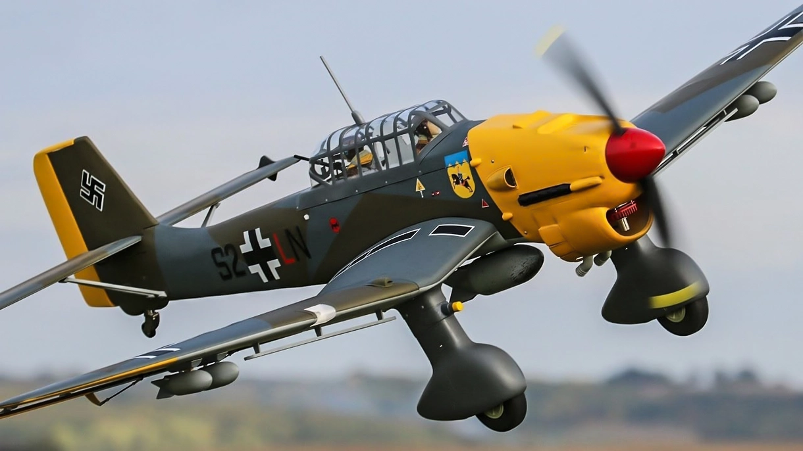
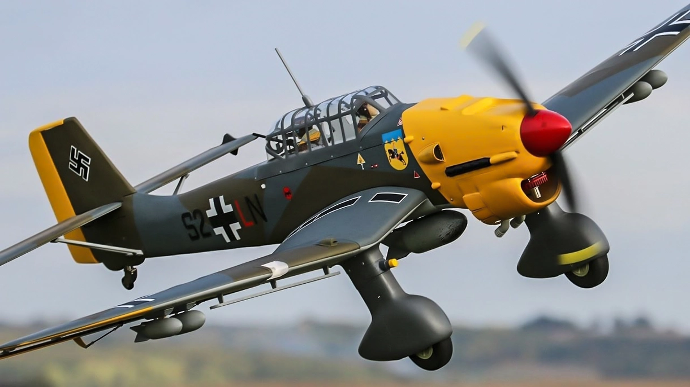
 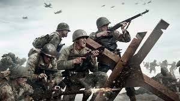
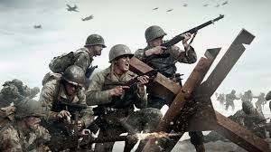
 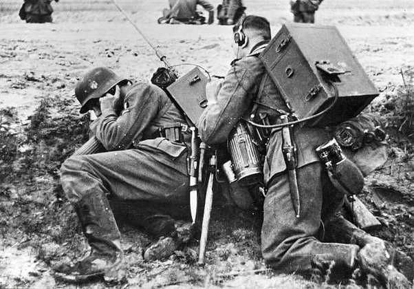
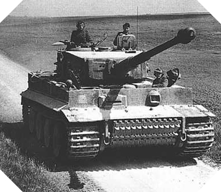
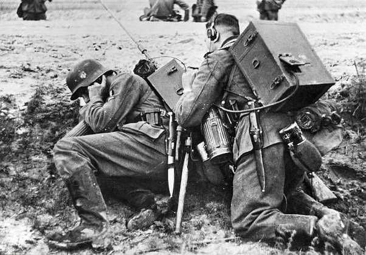
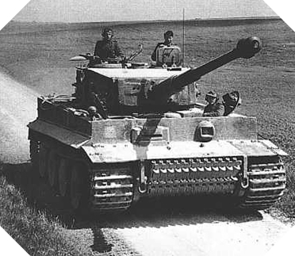
La Segunda Guerra Mundial fue el conflicto bélico más importante del siglo XX. Entre 1939 y 1945, Europa vivió el enfrentamiento de dos grandes alianzas: las potencias del Eje, con Alemania, Italia y Japón como principales protagonistas, y los Aliados, con Estados Unidos, Reino Unido, Francia y Rusia, entre otros.
Ver Más
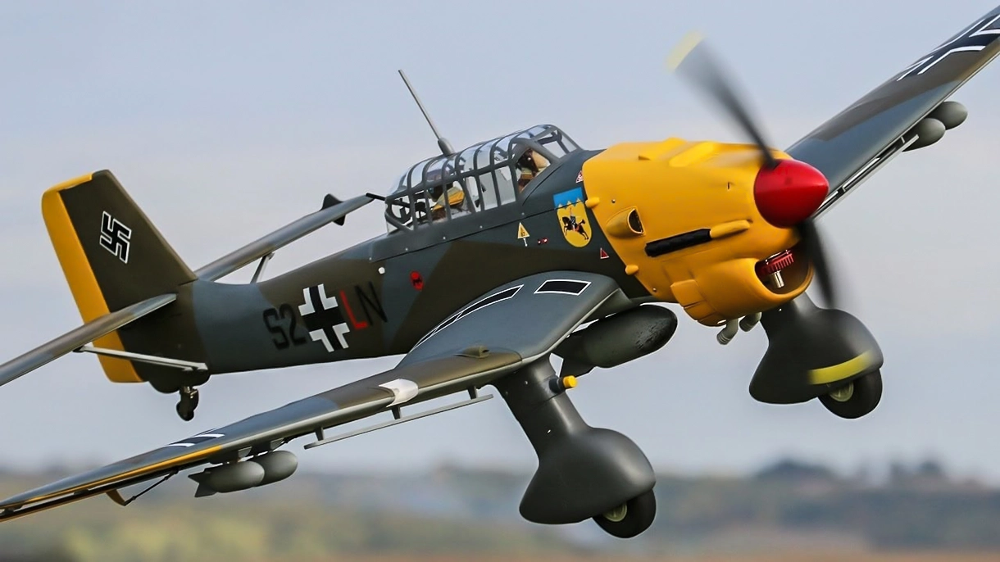
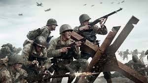
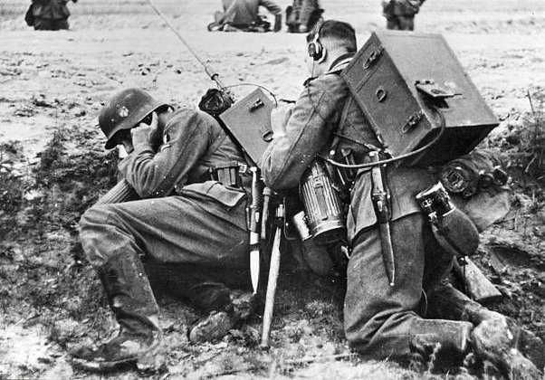
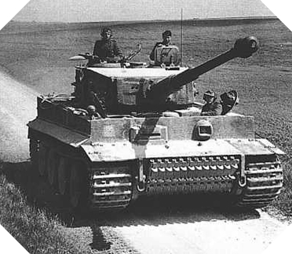

Polonia se encontró librando una guerra en dos frentes cuando el 17 de septiembre la Unión Soviética la invadió desde el este. El gobierno polaco huyó del país ese mismo día. Después de un intenso bombardeo, Varsovia se rindió ante los alemanes el 27 de septiembre de 1939. De conformidad con el protocolo secreto de su pacto de no agresión, Alemania y la Unión Soviética se repartieron a Polonia el 29 de septiembre de 1939. La línea de demarcación se estableció a lo largo del río Bug. La última resistencia de las unidades polacas concluyó el 6 de octubre.

La fricción entre el norte y el sur finalmente estalló en guerra en 1950, cuando los norcoreanos invadieron el sur. El sur no estaba preparado para la agresión y fue inmediatamente invadido. Al final, Estados Unidos intervino para ayudar al ejército de Corea del Sur, creando esencialmente una guerra por poderes entre la Unión Soviética y Estados Unidos. Nunca se firmó ningún tratado de paz definitivo para poner fin a la Guerra de Corea. En cambio, las dos partes firmaron un armisticio en 1953 que cesó las hostilidades y formó la Zona Desmilitarizada de Corea, una tierra de nadie entre los dos países que constituía la nueva frontera.

Bajo el nombre en código de 'Operación Weserübung' la Alemania nazi invade el 9 de abril de 1940, Dinamarca y Noruega. El mismo día, Dinamarca se rinde y pasa a estar ocupada

París, la capital francesa, cayó en manos de los alemanes el 14 de junio de 1940. Como parte del acuerdo de armisticio que Francia firmó con Alemania el 22 de junio, ésta ocupó el norte de ese país y toda su costa atlántica hasta la frontera con España.

Alemania inicia un gran ataque a la Unión Soviética, el estado comunista, la cual consta de Rusia y varios países vecinos. Este ataque tiene el nombre clave de "Operación Barbarroja" y es preparado minuciosamente, durante meses, por Hitler y su ejército.

n la mañana del 7 de diciembre de 1941arriba un flota japonesa de barcos de guerra a la base naval estadounidense de Pearl Harbor en Hawai. Con bombas y torpedos disparan los japoneses contra los norteamericanos. Cuando culmina el ataque hay un saldo de más de 3.500 estadounidenses muertos y heridos.

El 4 de junio de 1942, la aviación japonesa apareció en los cielos de Midway. Los raids aéreos provocaron un desastre en las defensas norteamericanas gracias a la superioridad de los Zero, los cazas japoneses, que no perdieron ningún aparato, mientras que los norteamericanos perdieron diecisiete aviones.
La batalla de Stalingrado fue un gran enfrentamiento bélico entre el Ejército Rojo de la Unión Soviética y la Wehrmacht de la Alemania nazi y sus aliados del Eje, por el control de la ciudad soviética de Stalingrado, actual Volgogrado, entre el 23 de agosto de 1942 y el 2 de febrero de 1943.

El 6 de junio de 1944, más conocido como el Día D, durante el transcurso de la Segunda Guerra Mundial, las fuerzas aliadas lanzaron la mayor invasión anfibia y aerotransportada de la historia de la guerra en la operación nombrada en clave como Overlord.
El 6 de junio de 1944, más conocido como el Día D, durante el transcurso de la Segunda Guerra Mundial, las fuerzas aliadas lanzaron la mayor invasión anfibia y aerotransportada de la historia de la guerra en la operación nombrada en clave como Overlord.

La liberación de París durante la Segunda Guerra Mundial consistió en la entrada de los aliados a París, en agosto de 1944. La batalla comenzó con una sublevación de la Resistencia francesa en la ciudad.

Adolf Hitler se suicida el 30 de abril de 1945, junto con su esposa Eva Braun. Un día antes, dictó su testamento a su secretaria. En él, reconoce la lucha del pueblo nazi alemán y afirma que los judíos son los culpables de la guerra. Elige la muerte, antes de caer en manos del enemigo. En el resto de su testamento Hitler nombra a su sucesor.
Berlín se rindió ante las fuerzas soviéticas el 2 de mayo de 1945. Las fuerzas armadas alemanas se rinden incondicionalmente en el oeste el 7 de mayo y en el este el 9 de mayo de 1945. El 8 de mayo de 1945 es proclamado Día de la Victoria en Europa (Día V-E).

El 6 y 9 de agosto de 1945 Estados Unidos lanzó sobre Hiroshima y Nagasaki las dos únicas bombas nucleares que se hayan utilizado en una guerra. Juntas fueron los ataques más letales que jamás hayan ocurrido, en los que se estima que murieron alrededor de 200.000 persona.
as la derrota de la Alemania el 9 de mayo de 1945 por los aliados y la Unión Soviética y la rendición del Imperio de Japón el 2 de septiembre de 1945 (tras la firma de la Declaración de Potsdam el 2 de agosto), la Segunda Guerra Mundial terminó.